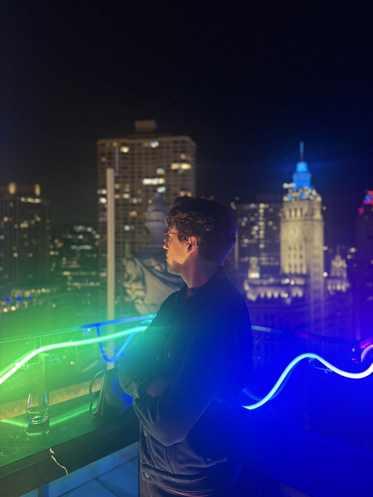

Callen Betts


HI, I'M CALLEN.
PROGRAMMER, GAME DEVELOPER, CREATOR.

In 2013, when I was only 9 years old, my dad taught me how to use Gamemaker Studio. It was the first game engine I ever used.
Now, more than a decade later, I've worked on nearly twenty games.
I've always loved programming - but the journey hasn't been easy.
To make a game, you need to understand a little bit of everything: how an artist thinks, how a programmer writes code, and how a musician brings a song to life. Being just a programmer or artist might be enough to make a good game, but it takes a creator to make a great game.
This realization was a huge part of my journey to becoming a better programmer.
During highschool I spent a lot of my time participating in game jams, working in small teams with other indie game developers in the community. They inspired me to begin posting devlogs of my development process on YouTube, where I amassed a following of over 5,000 people. It gave me a good excuse to goof off every now and then, but even better, it provided me with a community for my games.
Bitlands was released on Steam in 2022 during my senior year of highschool. It managed to raise $1,000 for charity, which at the time was an incredible number to me.
Right now, I'm developing my next indie game title, Earthward. Go check it out!
I've always loved programming - but the journey hasn't been easy.
To make a game, you need to understand a little bit of everything: how an artist thinks, how a programmer writes code, and how a musician brings a song to life. Being just a programmer or artist might be enough to make a good game, but it takes a creator to make a great game.
This realization was a huge part of my journey to becoming a better programmer.
During highschool I spent a lot of my time participating in game jams, working in small teams with other indie game developers in the community. They inspired me to begin posting devlogs of my development process on YouTube, where I amassed a following of over 5,000 people. It gave me a good excuse to goof off every now and then, but even better, it provided me with a community for my games.
Bitlands was released on Steam in 2022 during my senior year of highschool. It managed to raise $1,000 for charity, which at the time was an incredible number to me.
Right now, I'm developing my next indie game title, Earthward. Go check it out!
Over one-hundred years ago, the surface was destroyed by a terrible evil, forcing surviving civilization underground.
Explore a vast world filled to the brim with creatures and critters...but beware the various secrets lurking in the caves! Craft gear, fight powerful monsters, and reclaim the surface for all who dwell beneath it.
Explore a vast world filled to the brim with creatures and critters...but beware the various secrets lurking in the caves! Craft gear, fight powerful monsters, and reclaim the surface for all who dwell beneath it.
(2025) Created By Callen Betts